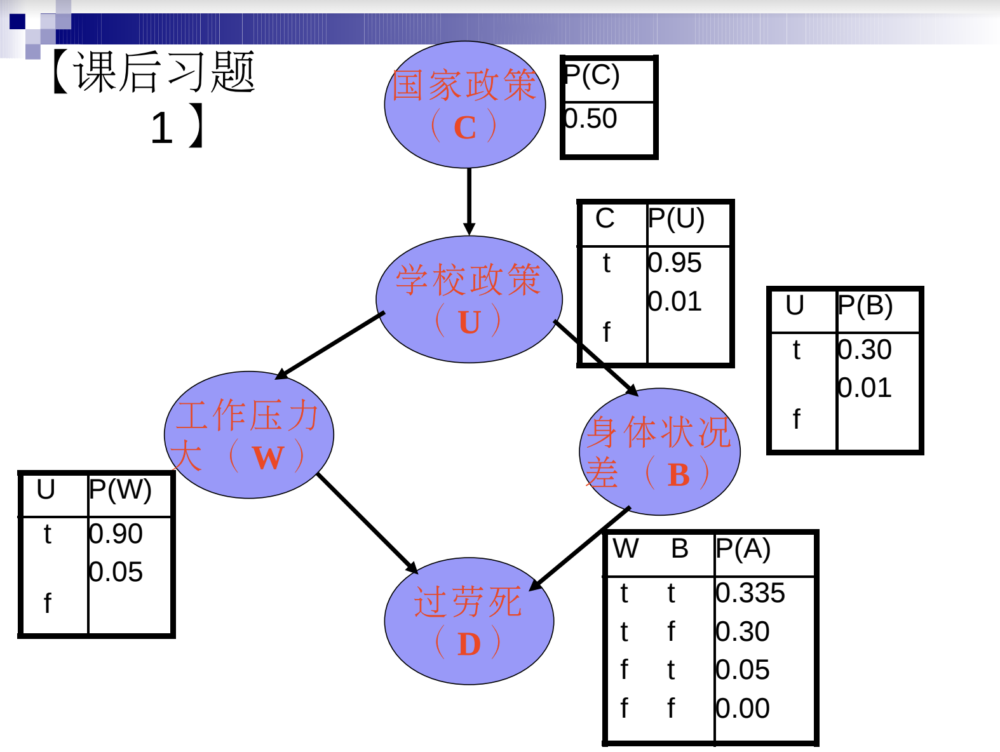

Bayesian Network Exe01
1. Introduction
AI Course Bayesian network exercise 01 resolution using enumeration method.
- C 国家政策
- U 学校政策
- W 工作压力
- B 身体状况
- D 过劳死
2. Scenarios
已知
 - 求 : 当 学校政策＝＝ True 而且 工作压力 == True 时, 过劳死的概率.
3. Resolution
- Value T:0.95 means True case with probability 0.95
- Probability of C is omitted as it is not related. Even include C, the result should be same.
Enumeration list
INDEX U W B D
1 T:0.96 T:0.90 T:0.3 T:0.335 2 T:0.96 T:0.90 F:0.7 T:0.3 3 T:0.96 T:0.90 T:0.3 F:0.665 4 T:0.06 T:0.90 F:0.7 F:0.7Probability calculation
P(D=T|U=T,W=T) = ( P(1) + P(2) ) / ( P(1) + P(2 )+ ... + P(4) ) = (0.96*0.90*0.3*0.335 + 0.96*0.90*0.7*0.3 ) / (...) = 0.3 * 1.035 / (0.3 * 1.035 + 0.3 * 0.665 + 0.7 * 0.7) = 31.05%